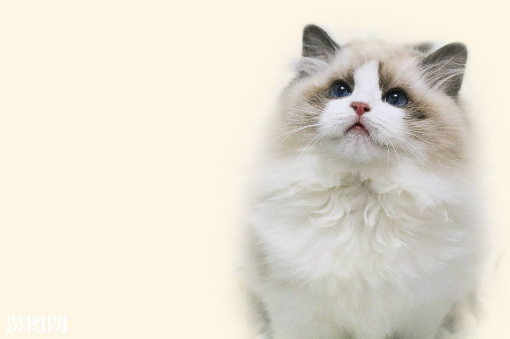
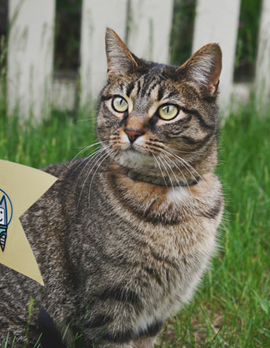
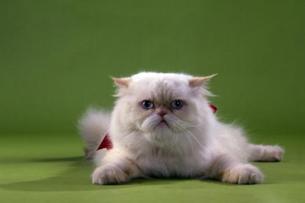
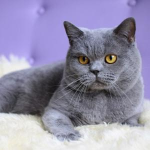
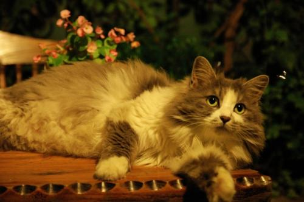
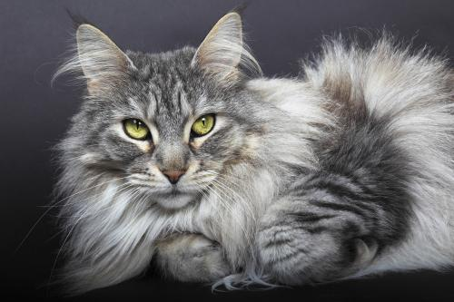
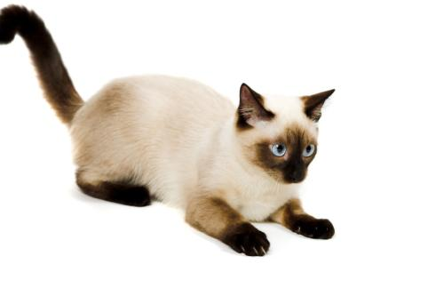
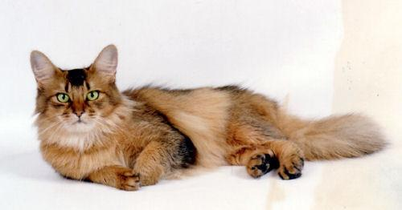
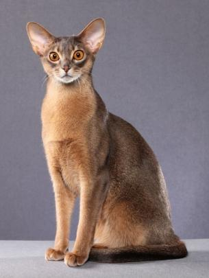

布偶猫
又称“布拉多尔（Ragdoll）”，发源于美国,较为温顺好静，对人友善

中国狸花猫
中国狸花猫是一种体格健壮的大型猫咪，长有美丽的斑纹被毛，尽管它感情不太外露，但还是能成为忠实友好的宠物。中国狸花猫性格活跃，以聪明的捕猎技巧而著称。

波斯貓
有一张讨人喜爱的面庞，长而华丽的背毛，优雅的举止，故有“猫中王子”、“王妃”之称

英国短毛猫
体形圆胖，四肢粗短发达，毛短而密，头大脸圆，温柔平静

挪威森林猫
挪威森林猫行走时颈毛和尾毛飘逸，非常美丽。常常以像妖精的猫出现在北欧的神话之中。

缅因猫
体格强壮，被毛厚密，长像与西伯利亚森林猫相似，在猫类中亦属大体型的品种。

暹罗猫
暹罗猫能够较好适应主人当地的气候，且性格刚烈好动，机智灵活，好奇心特强，善解人意。

索马里猫
大小中等，外表有王者风度。。活泼，但不热情过度。生命力顽强，温顺，性情温和，很贪玩，情感丰富，非常需要主人的关注

阿比西尼亚猫
阿比西尼亚猫就像绘画或雕像中描绘的古埃及猫一样，优雅的姿态，肌肉强健的身体，美丽的颈部，大耳朵，杏仁般的大眼睛。